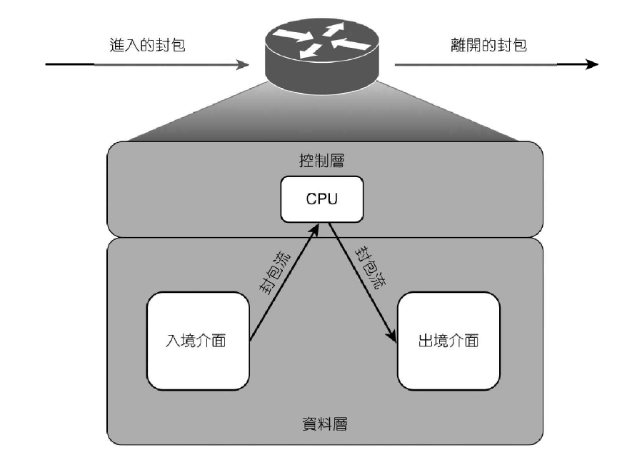
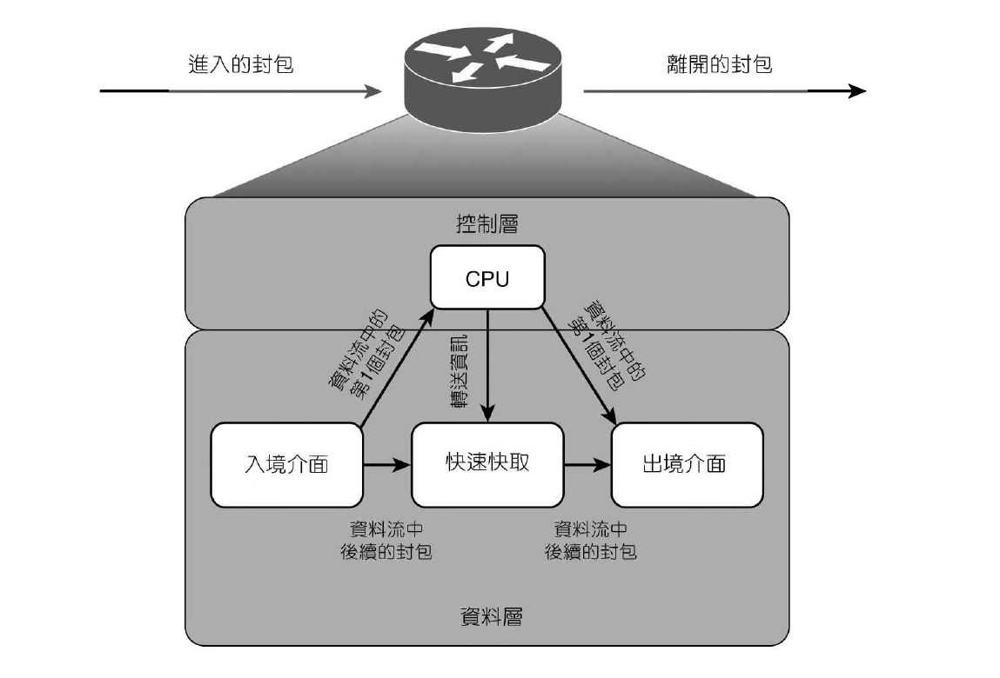
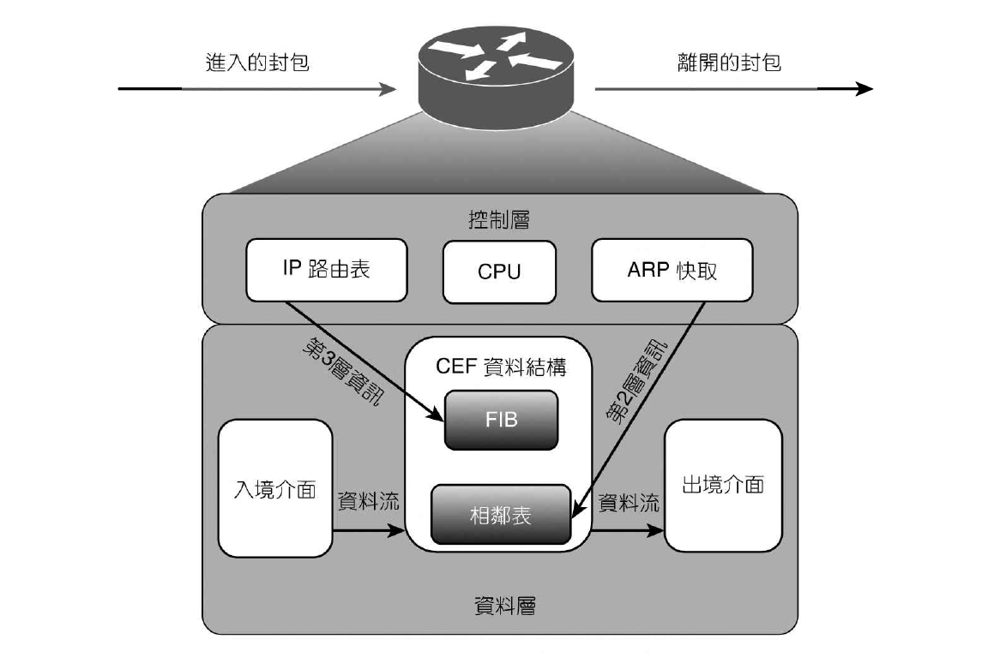

- 首頁
- 大一
- 大二
- 大三
- 大四
- 網路相關
- LAN Design
- Layer 2
- Layer 3
Packet Switching
多數路由器會將功能分為三個不同層面
- 管理層：與設備管理有關。如利用 ssh 透過其中一條 vty 連到設備
- 控制層：與封包轉送決策有關。如遶送協定的運作
- 資料層：與通過路由器傳送資料有關。如使用者的資料流從 PC 轉送到不同 Web Server
控制層與資料層會直接影響到路由器傳送封包的速率
Cisco 路由器支援以下三種封包交換模式：
- 程序交換 (Process Switching)
- 快速交換 (Fast Switching)
- Cisco快速轉送 (Cisco Express Forwarding, CEF)
程序交換
路由器遶送封包時，會移除 L2 標頭，檢查 L3 的位址，決定如何轉送封包後，重寫 L2 標頭 (可能修改目的地的 MAC Address、計算新的 CRC)，將封包往合適的介面轉送出去。

關閉快速交換，使用程序交換：no ip route-cache
快速交換
採用資料層所維護的一種快速快取(fast cache)。包含不同資料流量如何轉送的資訊，相同資料流的後續封包可以根據這些資訊進行轉送，降低 CPU 使用率。

ip route-cache
Cisco 快速轉送
CEF 在資料層維護兩種資料表：
- 轉送訊息資料庫 (Forwarding Information Base，FIB)
- 維護 L3 的轉送資訊
- 相鄰表 (Adjacency table)
- 維護 FIB 列舉的下一站之 L2 轉送資訊
轉送資訊來自 Routing table 與 ARP table
不同於快速交換，CEF 不需要資料流的第一個封包經過程序交換，整個資料流即可在資料層被轉送

ip route-cache cef
檢驗：
show ip interface {interface-id}
show ip cef，顯示 FIB 的內容 (‘attached’：路由器的直連網路，‘receive’：路由器介面上的一個IP)
show adjacency [ detail ]，顯示 FIB 中關於如何到達特定相鄰鄰居的資訊